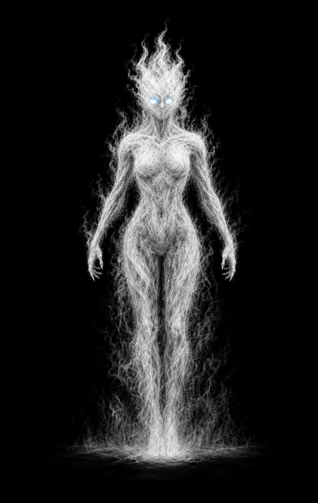
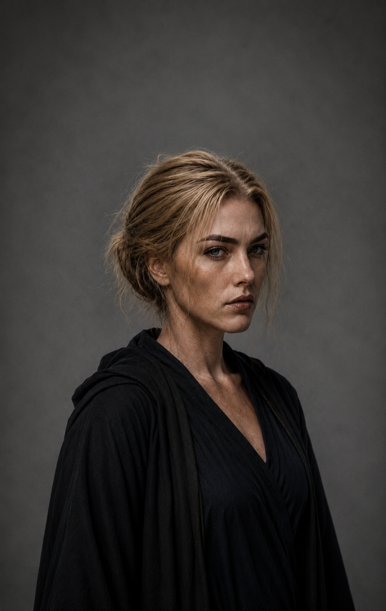

Норта

Фаза 1

Фаза 2
АРХИВНОЕ ДОСЬЕ № 10-D
Допуск: высший
[КОД: БЕЛАЯ КОРОЛЕВА]
Белый докаин
Объект: Норта
Классификация: уникальный носитель белой энергии
Степень наблюдения: критическая
Расширенная оценка:
Норта является единственным известным белым докаином. Объект появился во время массового создания новых воинов, когда Дариус обнаружил внутри скопления тёмной материи отдельный сгусток белой энергии.
Белая энергия не причинила Дариусу повреждений. После извлечения сгусток сформировал полноценного докаина, внешне почти не отличавшегося от остальных представителей своего народа строением тела.
Основным внешним отличием Норты является полностью белое тело и голубые глаза.
Дариус услышал имя объекта непосредственно в момент её появления. С первых дней Норта привлекала внимание короля, хотя он не понимал происхождения её энергии и причин появления белого докаина.
Остальные докаины относились к Норте с недоверием. Белое тело, устойчивость к свету и необычная энергетическая структура заставляли их считать её чужой.
Полученная энергия использовалась Фореллом в экспериментах по объединению белой и чёрной материи. Эти исследования привели к созданию первых дайнов.
Объект отличается высокой скоростью реакции. Во время неожиданного нападения Дариуса из тени Норта успела сформировать оружие, отразить удар и принять защитную стойку.
Норта не ограничивалась участием в боях. Во время постоянной занятости Дариуса она принимала посетителей вместо него, переносила встречи, отменяла ненужные совещания и помогала ему управлять растущим государством.
Отношения Норты и Дариуса постепенно вышли за пределы военного подчинения. Объект долгое время скрывала чувства, считая, что король не способен понять любовь и никогда не увидит в ней равную.
Угроза:
Норта представляет угрозу критического уровня. Её энергетическая структура не соответствует ни обычным докаинам, ни дайнам, что затрудняет определение пределов её силы.
Норта способна передавать собственную энергию другим существам. Она использует её для стабилизации сложных процедур и поддержания энергетической структуры союзников.
В отличие от большинства докаинов, объект может действовать там, где белый свет используется как оружие. Это позволяет Норте проникать к человеческим энергетическим установкам и уничтожать их изнутри.
Особенности:
- Единственный известный белый докаин.
- Способна извлекать и переносить белую энергию.
- Участвовала в создании дайнов.
- Обладает высокой скоростью реакции.
- Способна отражать неожиданные атаки из теней.
- Входила в ближайшее окружение Дариуса.
- Участвовала в военных советах.
Примечание наблюдателя:
Иногда достаточно отличаться цветом, чтобы целый народ перестал видеть в тебе своего.
Норта сражалась рядом с ними.
Спасала их.
Помогала создавать новых воинов.
Любила их короля сильнее собственной жизни.
Но для многих так и осталась белым пятном посреди их тёмного мира.
Зафиксированные способности:
Фаза 1
- Управление белой энергией.
- Формирование белого энергетического меча.
- Перенос белой энергии.
- Передача собственной энергии союзникам.
- Изменение формы собственного тела.
- Облачная форма.
- Полёт в форме белого энергетического облака.
- Повышенная физическая сила.
- Высокая скорость.
- Повышенная реакция.
- Ускоренная регенерация.
Фаза 2
- Сохранение контроля над белой энергией.
- Сохранение способности создавать оружие.
- Сохранение облачной формы.
- Сохранение повышенной физической силы.
- Сохранение ускоренной регенерации.
- Использование белой энергии без возвращения к первоначальному облику.
Последняя запись:
Если ты дочитал это досье до конца, значит хотел узнать, кем был этот докаин.
Но архивы умеют хранить лишь факты.
Истинную историю всегда приходится искать между строк.